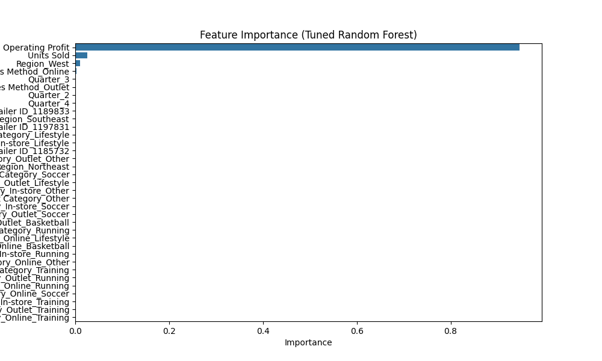

Welcome to my data science portfolio! Below, explore my projects showcasing skills in regression, data analysis, and machine learning.
A regression analysis to predict Nike's US sales revenue using a Tuned Random Forest model (R²: 0.9840, RMSE: 18,000.59).
Key Findings: Units Sold and Operating Profit are primary drivers. Online sales, Basketball/Lifestyle categories, and Q4/Q3 quarters drive higher revenue.
Recommendations: Boost Units Sold, optimize Online sales, target Q4/Q3, improve Southeast region.
